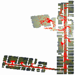

|  |
Pedestrian Evacuation ModelContact: Sarah Wise, Mark Coletti, or Andrew Crooks, |
This model demonstrates how one can use GeoMason to explore evacuations from a building. The simulation starts by reading raster data describing a building layout (converted from CAD files). The simulation randomly places a number of agents on walkable areas within side of the building. Once the agents have been placed on the ground, they follow the lowest cost path to the exit (in this example there is only one). The yellow paths are traces of pedestrian moment.